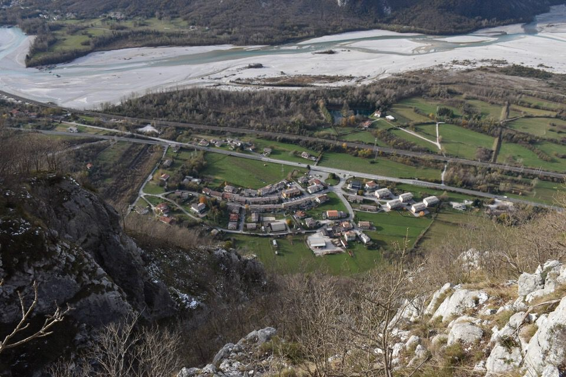

Anello come proposto da Armellini: semplicemente splendido.
Salendo non capisco perché la traccia sia così ben battuta, lo capisco presto quando sul pulpito q805 troviamo tre tizi appollaiati col fucile, sicuramente poco contenti di trovare qui gente a passeggio: la montagna è di tutti.
Già dalla partenza si intuiscono le cenge boscose che percorreremo fra poco, da dx verso sx.
Il sentiero è davvero splendido e panoramico.
Il primo, stretto e pittoresco rio che si oltrepassa.
A picco sopra i tetti di Portis.
La confluenza Tagliamento - Fella.
Eccoci sul costone dove finisce il traverso e si inizia a salire decisamente.
Impressionante da qui la cima di Cervada, calcata qualche anno fa durante la percorrenza della bella cresta ovest del Plauris.
Fra il costone di salita e il costone dove inizia il bosco pensile di Raurêt c'è un traverso dove non abbiamo trovato alcuna traccia.
Ma poi la passabile traccia (cit.) che porta allo stavolo l'abbiamo trovata eccome!
Che posto! Pensa quando qualche decennio fa non c'erano alberi...
Purtroppo giri come questi "rendono poco" a livello fotografico, per cui ho poco da scrivere e da mostrare: andateci.
Con un po' di preoccupazione iniziamo a scendere per il sentiero d'accesso diretto, che inizia proprio dove c'è lo stavolo.
(Preoccupazione perchè il sentiero non va mancato: non c'è nessun altro modo per scendere essendo Raurêt su di un bosco pensile sopra enormi salti)
Si resta increduli ad osservare il sentiero d'accesso diretto, dalla val Lavaruzza, allo stavolo Raurêt: quello che in origine era un ardito sentiero di camosci (che sfrutta due cenge parallele che permettono di superare una fascia rocciosa e di raggiungere il bosco pensile di Raurêt), l'uomo l'ha trasformato in una comoda mulattiera. È incredibile osservare gli enormi muretti (anzi, muri) che da chissà quanto sostengono i tornanti.
Stavolo Cucos: in un battibaleno si è di nuovo giù.